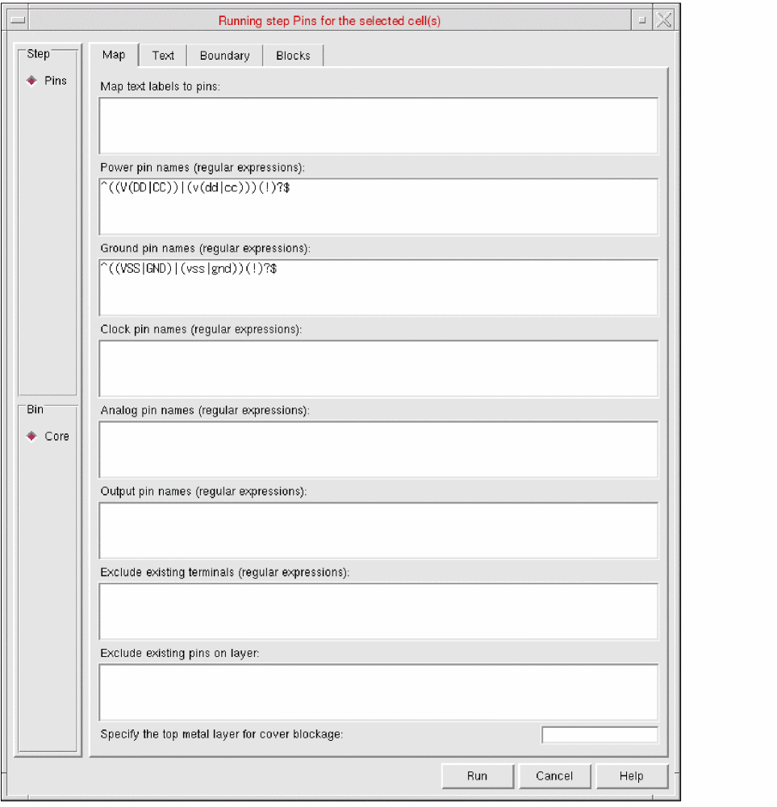
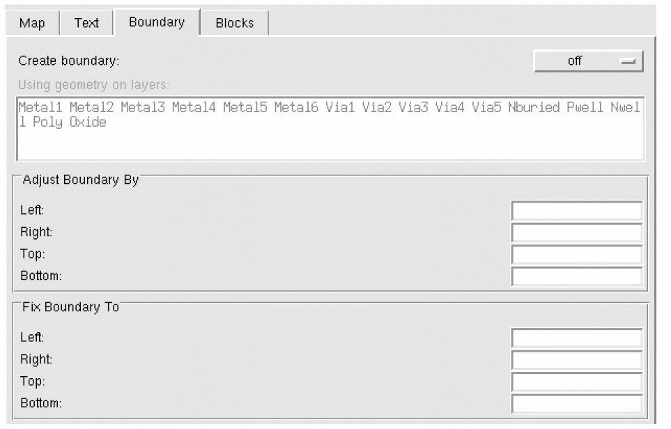

Setting PR Boundary Creation Options in Standalone Abstract Generation
在独立版抽象生成中设置 PR 边界创建选项
To control the calculation of the place-and-route (PR) boundary in Running Step Pins form:
要在 Running Step Pins 表单中控制 place-and-route（PR）边界的计算：
-
Select one or more cells in the main window and choose Flow – Pins, or click the Pins icon.
在主窗口中选择一个或多个单元，然后选择 Flow – Pins，或点击 Pins 图标。
The Running step Pins form is displayed.
将显示 Running step Pins 表单。 -
Click the Boundary tab.
点击 Boundary 选项卡。

-
In the Create boundary cyclic field, you can specify whether Abstract Generator is to create a PR boundary by choosing one of the values from always, as needed, and off.
在 Create boundary 循环字段中，您可以通过选择 always、as needed 或 off 来指定抽象生成器是否创建 PR 边界。
Abstract Generator creates an OA PR boundary during the Pins step itself and propagates it during the Extract and Abstract step.
抽象生成器会在 Pins 步骤中创建 OA PR 边界，并在 Extract 与 Abstract 步骤中继续传播该边界。 -
In the Using geometry on layers field, specify the layers to be used to calculate the PR boundary
在 Using geometry on layers 字段中，指定用于计算 PR 边界的层。 -
In the Adjust Boundary By field, you can increase or decrease the size of an existing or calculated PR boundary on one or more sides. To do this, specify the distance to be added to each boundary edge.
在 Adjust Boundary By 字段中，您可以在一个或多个边上增大或减小已存在或已计算的 PR 边界尺寸。为此，请指定要加到每条边界边缘的距离。 -
In the Fix Boundary To field, you can fix individual cell boundary edges to an absolute value. These values are applied to existing and calculated PR boundaries.
在 Fix Boundary To 字段中，您可以将单个 cell 边界边缘固定到某个绝对值。这些值会应用到现有及计算得到的 PR 边界上。 -
Click Run.
点击 Run。
The Percent Complete message box reports the progress of the step.
Percent Complete 消息框会报告该步骤的进度。
The PR boundary is created in the layout. The PR boundary shapes, which have the placementClass property set, are considered by Abstract Generator to be placement regions. The placementClass property indicates that instances with a matching placementClass can be placed in the same placement regions.
PR 边界会在版图中创建。对于设置了 placementClass 属性的 PR 边界图形，抽象生成器会将其视为 placement regions。placementClass 属性表示具有相同 placementClass 的实例可以放置在相同的 placement regions 中。
Abstract Generator ignores placement regions while determining whether a PR boundary exists. To enable Abstract Generator to correctly recognize a PR boundary, the instance must not have the placementClass property set.
抽象生成器在判断是否存在 PR 边界时会忽略 placement regions。要让抽象生成器正确识别 PR 边界，实例必须不设置 placementClass 属性。
Related Topics
相关主题
Customizing Text Labels for Abstract Generation
Return to top